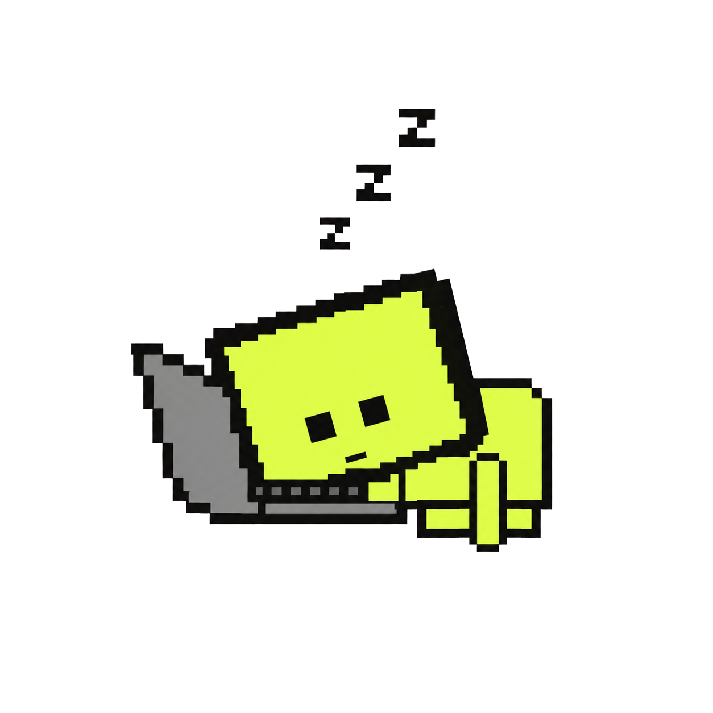
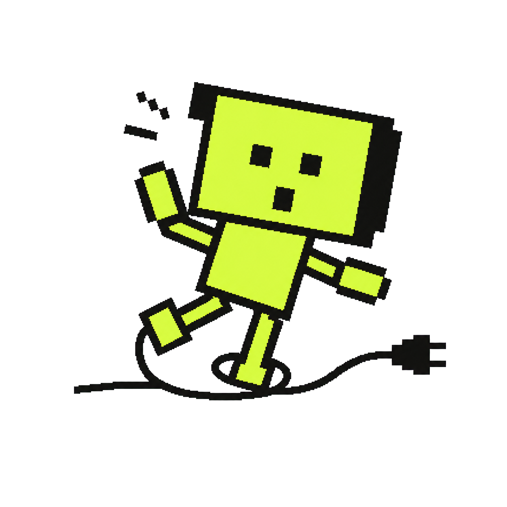
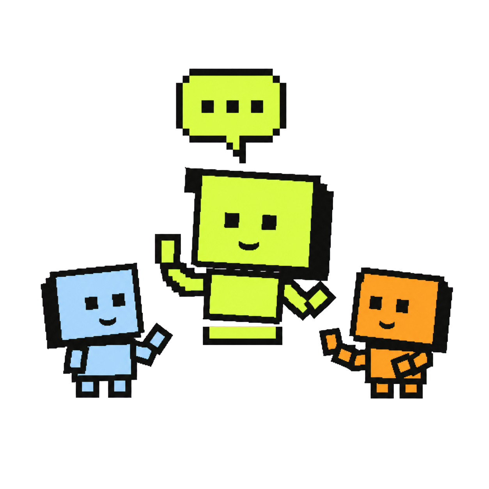

01 / Projects
Cool projects I really enjoyed building.
Selected systems work from enterprise platforms and research.
Browse GitHub ↗Platform engineering / Amadeus

Airline data services and platform automation.
Built Java services for secure data exchange and helped own delivery and reliability across 100+ OpenShift namespaces.
View career work →Integration engineering / Netcompany — INTRASOFT

Telecom integrations with production ownership.
Delivered and supported middleware integrations for Vodafone and OTE under SLA-driven, zero-defect release practices.
View career work →Applied research / University of Patras

VR / AR projects.
Four interactive projects I led and built: training, art exploration, health simulation, and brain-computer interfaces.
Explore projects →